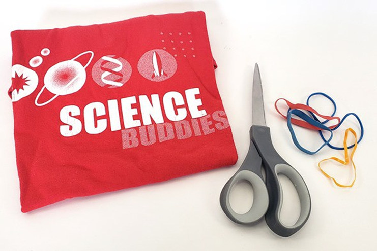
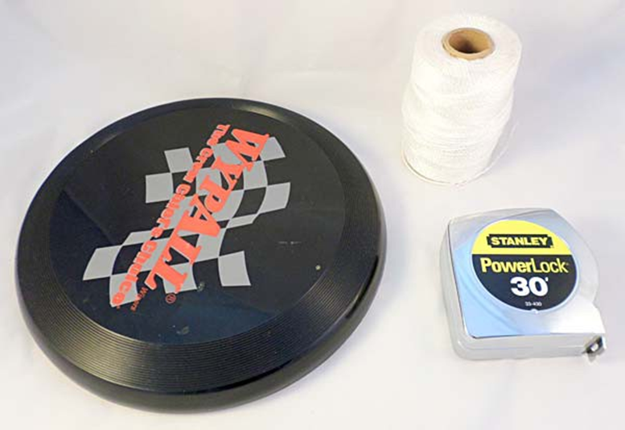
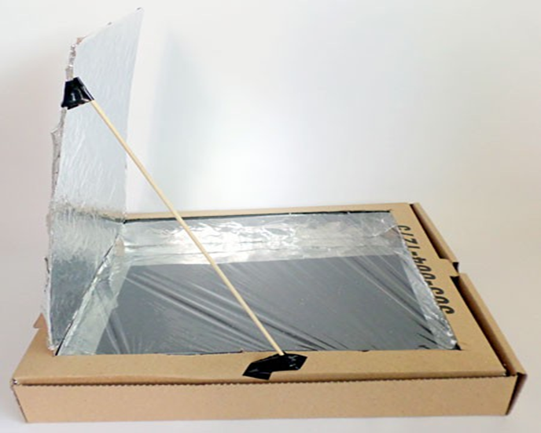

سرگرمی:
آتش بازی کے بھڑکتے ہوئے رنگوں کو دریافت کریں۔
خلاصہ:
تعارف:
کیا آپ نے کبھی آتش بازی کا شو دیکھا ہے اور سوچا ہے کہ تمام مختلف رنگوں - حیرت انگیز سرخ، پیلا، نارنجی، بلیوز، جامنی، سبز اور مزید - کیسے بنائے جاتے ہیں؟ آتش بازی کا رنگ، یا رنگ، اس بات پر منحصر ہوتا ہے کہ آتش بازی میں کون سے رنگ پیدا کرنے والے کیمیکل ہوتے ہیں۔ یہ کیمیکل مختلف دھاتی نمکیات ہیں جو آتش بازی کے وقت جلتے ہیں، اور دھاتوں کو جلانے سے رنگ بنتے ہیں۔ مختلف دھاتیں مختلف، مخصوص رنگ دیتی ہیں۔ سائنس کی اس سرگرمی میں، آپ کو گھر میں کچھ دھاتی نمکیات کو جلانا پڑے گا تاکہ یہ معلوم کیا جا سکے کہ وہ کون سے رنگ بناتے ہیں۔ پھر، اگلے آتش بازی کے شو میں، آپ دوستوں اور خاندان والوں کو اپنے علم سے متاثر کر سکتے ہیں کہ ان کے نظر آنے والے کچھ رنگوں کی وجہ کیا ہو سکتی ہے!
مواد:
- جلانے کے لیے کیمیکل، خاص طور پر ٹیبل نمک اور کاپر سلفیٹ۔
- ٹیبل نمک کو تکنیکی طور پر سوڈیم کلورائیڈ کہا جاتا ہے۔
- کاپر سلفیٹ پالتو جانوروں یا ایکویریم اسٹورز کے ذریعے طحالب کا مقابلہ کرنے کے لیے، یا گھریلو بہتری کے اسٹورز کے ذریعے جڑ کے قاتل کے طور پر دستیاب ہے۔ یقینی بنائیں کہ پروڈکٹ خالص کاپر سلفیٹ ہے اور یہ پاؤڈر یا چھوٹے کرسٹل کی شکل میں ہے۔
- متبادل طور پر، اگر آپ ان کیمیکلز کے علاوہ دو دیگر رنگین، مشکل سے تلاش کرنے والے دھاتی نمکیات اور کچھ حفاظتی سامان چاہتے ہیں، یہ سب ایک آسان پیکج میں ہے، تو ہمارے پارٹنر ہوم سائنس ٹولز سے رینبو فائر کٹ آزمائیں۔
- چھوٹا پلاسٹک بیگ
- بانس کے سیخ (کم از کم 6)
- سفید گلو
- موم بتی
- میچ یا ہلکا
- پانی کا کنٹینر
- ایک بیرونی سطح پر آپ محفوظ طریقے سے موم بتی جلا سکتے ہیں جب باہر اندھیرا ہو (یا گودھولی)۔ اس بات کو یقینی بنائیں کہ یہ ایک کھلی جگہ میں ہے تاکہ ہوا کا اچھا بہاؤ ہو۔
- بالغ مددگار
- تجویز کردہ: ڈسپوزایبل دستانے، برتن دھونے کے دستانے ایک عمدہ متبادل ہیں۔ یہ کاپر سلفیٹ کو سنبھالنے کے لیے ہیں۔
- تجویز کردہ: حفاظتی چشمے۔
- اختیاری: ٹارچ
- اختیاری: ماسکنگ ٹیپ اور قلم یا مارکر کو کیمیائی ناموں کے ساتھ لیبل کرنے کے لیے
تیاری کا کام:
- جب آپ سیخوں کو جلاتے ہیں، تو اسے کسی کھلے، بیرونی جگہ پر کرنا یقینی بنائیں اور اس بات کا خیال رکھیں کہ سیخوں سے دھواں یا دھواں سانس نہ لیں۔
- آگ کا استعمال کرتے وقت، سیخوں کو جلانے، اور کیمیکلز کو سنبھالتے وقت بالغوں کی نگرانی کی ضرورت ہوتی ہے۔
- اگر آپ چاہیں تو سیخوں پر ان کیمیکلز کے ناموں کے ساتھ لیبل لگائیں جن سے آپ سیخوں پر کوٹنگ کریں گے۔ (اگر آپ صرف ٹیبل سالٹ اور کاپر سلفیٹ کی جانچ کر رہے ہیں تو آپ کو سیخوں پر لیبل لگانے کی ضرورت نہیں ہوگی کیونکہ ان کیمیکلز کے درمیان فرق بتانا آسان ہے کیونکہ ٹیبل سالٹ سفید اور کاپر سلفیٹ نیلا ہوتا ہے۔) آپ تین سیخوں پر کوٹنگ کر رہے ہوں گے۔ ہر ایک کیمیکل جھنڈے کی طرح سیخ کے کند سرے کے گرد ماسکنگ ٹیپ کا ایک ٹکڑا لگا کر لیبل بنائیں۔ قلم یا مارکر کے ساتھ، ہر سکیور کے ماسکنگ ٹیپ کے لیبل پر کیمیائی نام کا نام لکھیں۔
طریقہ کار
- ایک چھوٹے سے پلاسٹک کے تھیلے میں تھوڑی مقدار میں ٹیبل نمک (تقریباً ایک کھانے کا چمچ) ڈالیں۔
- ایک سیخ کی نوک کے آخری ایک انچ پر گوند کی ایک پتلی تہہ لگائیں۔ بس تھوڑا سا گوند ہی کافی ہے۔
- تھیلے میں موجود نمک میں سیخ کی گلو لیپت نوک کو ڈبو دیں۔ سیخ کی نوک کو نمک کے ساتھ کوٹ کرنے کے لیے سیخ کو تھوڑا آگے پیچھے مڑیں۔ سیخ کو خشک ہونے کے لیے ایک طرف رکھ دیں۔
- اس عمل کو مزید دو سیخوں کے ساتھ دہرائیں تاکہ آپ کے پاس کل تین سیخیں ہوں جن کے اشارے نمک کے ساتھ لپٹے ہوئے ہوں۔
- اگلا، کاپر سلفیٹ کے ساتھ ایک بالغ کوٹ کے ساتھ مزید تین سیخ لگائیں۔ پیکیجنگ پر موجود تمام حفاظتی احتیاطی تدابیر کو پڑھیں اور ان پر عمل کریں جس میں کاپر سلفیٹ آیا ہے۔ محتاط رہیں کہ کسی کو بھی کاپر سلفیٹ کی دھول میں سانس لینے یا اس کی جلد یا چہرے پر نہ لگنے دیں۔ اگر چاہیں تو ڈسپوزایبل دستانے اور حفاظتی چشمے استعمال کریں۔ اگر دستانے استعمال نہیں کررہے ہیں، تو یقینی بنائیں کہ کاپر سلفیٹ کو ہاتھ نہ لگائیں۔ سیخ کی نوک کے آخری ایک انچ کو گوند کی ایک پتلی تہہ میں کوٹ کریں اور گلو کوٹڈ نوک کو نیلے رنگ کے کاپر سلفیٹ کے تھیلے میں ڈبو دیں، اسے آگے پیچھے گھما کر ٹپ کو کاپر سلفیٹ میں کوٹ دیں۔
- اسے مزید دو سیخوں کے ساتھ دہرائیں تاکہ آپ کے پاس تین ٹوٹل ہوں جو کاپر سلفیٹ میں لیپت ہوں۔
- اگر آپ رینبو فائر کٹ استعمال کر رہے ہیں، تو اس عمل کو دہرائیں تاکہ بالغ کوٹ دوسرے سیخوں کو کسی بھی اضافی کیمیکل کے ساتھ رکھیں جس کی آپ جانچ کرنا چاہتے ہیں (یعنی، سٹرونٹیم کلورائیڈ یا بورک ایسڈ)۔ ان کیمیکلز کو سنبھالتے وقت تمام مناسب حفاظتی احتیاطی تدابیر پر عمل کرنا یقینی بنائیں۔ ہر ایک کیمیکل کے ساتھ تین سیخوں کو کوٹ کریں جس کی آپ جانچ کرنا چاہتے ہیں۔
- اپنے تمام سیخوں کو خشک ہونے دیں۔ اس میں ہر ایک کے لیے تقریباً آدھا گھنٹہ لگے گا۔
- جب باہر اندھیرا (یا گودھولی) ہو، تو اپنی موم بتی، ماچس اور تیار سیخوں کو باہر کسی کھلی جگہ پر لے جائیں جہاں آپ محفوظ طریقے سے موم بتی جلا سکتے ہیں۔ اس بات کو یقینی بنائیں کہ ہوا کا بہاؤ اچھا ہے۔ حفاظتی احتیاط کے طور پر اپنے ساتھ پانی کا ایک کنٹینر بھی رکھیں۔
- کسی بالغ کو موم بتی روشن کروائیں۔
- ایک بار جب موم بتی اچھی طرح جل رہی ہو، احتیاط سے تیار شدہ سیخوں میں سے ایک کو نکالیں اور کیمیکل لیپت والے سرے کو شعلے میں رکھیں۔ اس بات کو یقینی بنائیں کہ جلتے ہوئے سیخ سے دھوئیں یا دھواں سانس نہ لیں!
کیمیکل کس رنگ میں جلتا ہے؟ یہ موم بتی کے شعلے کے عام رنگ سے کیسے موازنہ کرتا ہے؟
- مشورہ: آپ موم بتی کے شعلے میں کیمیکل کا رنگ دیکھ سکتے ہیں، یا سیخ کو موم بتی سے دور رکھ کر (ایک بار جب کیمیکل آگ لگ جائے) اور سیخ کے کیمیائی لیپت سرے پر شعلے کو دیکھ کر .
- چند لمحوں کے بعد سیخ کو بھی آگ لگ سکتی ہے۔ بس اسے آگ سے ہٹا دیں اور اسے اڑا دیں، یا پانی کے برتن میں بجھا دیں۔
- دوسرے کیمیائی لیپت سیخوں کے لیے اس عمل کو دہرائیں۔ (آپ کو یہ جاننے میں مدد کرنے کے لیے کہ آپ کون سا کیمیکل جلا رہے ہیں، یاد رکھیں کہ ٹیبل سالٹ میں لیپے ہوئے سیخوں میں سفید کوٹڈ ٹپس ہوں گے، جب کہ کاپر سلفیٹ میں لیپے ہوئے سیخوں میں نیلے رنگ کے ٹپس ہوں گے۔)
ٹیبل نمک (سوڈیم کلورائیڈ) کس رنگ میں جلتا ہے؟ کاپر سلفیٹ کس رنگ میں جلتا ہے؟ اگر آپ دوسرے کیمیکلز کو جلاتے ہیں، تو وہ کس رنگ کو جلاتے ہیں؟
سرگرمی:
DIY فیس ماسک
خلاصہ:
تعارف:
COVID-19 کے پھیلاؤ کو کم کرنے کے لیے، CDC ماسک یا کپڑے سے چہرے کو ڈھانپنے کی تجویز کرتا ہے — خاص طور پر ایسی جگہوں پر جہاں سماجی دوری برقرار رکھنا ناممکن ہو (دوسروں سے کم از کم 6 فٹ دور رہنا)۔ یہ سفارش دو سال یا اس سے زیادہ عمر کے ہر فرد کے لیے ہے (دو سال سے کم عمر کے بچوں کو ماسک نہیں پہننا چاہیے)۔ اپنا ماسک خود بنانے کی بہت سی ہدایات آن لائن دستیاب ہیں۔ یہ سرگرمی آپ کو انجینئرنگ کے مسئلے کے طور پر ماسک کو ڈیزائن کرنے اور بنانے کے عمل کے بارے میں سوچنے میں مدد کرے گی۔ آپ کے پاس دستیاب مواد کو دیکھتے ہوئے، آپ کو ایک ماسک ڈیزائن کرنے کے لیے کن عوامل پر غور کرنا چاہیے جو آپ کے لیے اچھا کام کرے؟
مواد:
چونکہ یہ ایک انجینئرنگ سرگرمی ہے، اس لیے مواد کی کوئی مخصوص مطلوبہ فہرست نہیں ہے۔ آپ کو دستیاب مواد کو استعمال کرنے کی ضرورت ہوگی۔ مثال کے طور پر:
- کپڑا مواد جیسے بندانا یا پرانی ٹی شرٹ
- بالوں کے ٹائی یا ربڑ بینڈ
- اختیاری: پائپ کلینر
- قینچی

تیاری کا کام:
اپنا ماسک بنانے سے پہلے، ایک اچھا ماسک بنانے کے لیے درکار معیار کے بارے میں سوچیں۔ سی ڈی سی کے مطابق، کپڑے سے چہرے کو ڈھانپنا چاہیے:
- چہرے کے پہلو کے خلاف آرام سے لیکن آرام سے فٹ ہوں۔
- ٹائیوں یا کانوں کے لوپ سے محفوظ رہیں
- تانے بانے کی متعدد پرتیں شامل کریں۔
- بغیر پابندی کے سانس لینے کی اجازت دیں۔
- بغیر کسی نقصان یا شکل میں تبدیلی کے دھونے اور مشین کو خشک کرنے کے قابل ہو۔
اس کے علاوہ، یہ بہت ضروری ہے کہ آپ کا ماسک آرام دہ ہو اور اپنی جگہ پر رہے۔ اگر آپ کو ماسک کو ایڈجسٹ کرنے کے لیے مسلسل اپنے چہرے کو چھونے کی ضرورت ہے، تو یہ ماسک پہننے کا مقصد ختم کر دے گا!
یاد رکھیں کہ صرف گھر میں بنا ماسک ہی COVID-19 کے پھیلاؤ کو روکنے کے لیے کافی نہیں ہے۔ یہ صرف ایک حفاظتی اقدام ہے جسے آپ اٹھا سکتے ہیں، دوسروں کے ساتھ ساتھ بار بار ہاتھ دھونا، سماجی دوری، اور اپنے چہرے کو چھونے سے گریز کرنا۔ یہ نوٹ کرنا بھی ضروری ہے کہ اس سرگرمی میں گھریلو ماسک N-95 ریسپریٹر کی طرح تحفظ فراہم نہیں کرتے ہیں۔
طریقہ کار:
- آپ کے پاس موجود مواد اور CDC کی ہدایات کے سیٹوں میں سے ایک کا استعمال کرتے ہوئے ماسک بنانے کی کوشش کریں۔ اگر آپ کے پاس ہدایات کے مطابق صحیح مواد نہیں ہے، تو آپ ان میں سے کسی ایک ڈیزائن میں ترمیم کرنے کی کوشش کر سکتے ہیں۔
- اپنا ماسک آزمائیں اور دیکھیں کہ یہ کیسے فٹ بیٹھتا ہے۔
کیا ماسک آپ کے چہرے کے اطراف میں آرام سے لیکن آرام سے فٹ بیٹھتا ہے؟ کیا کوئی خلا ہے، مثال کے طور پر آپ کی ناک یا ٹھوڑی کے ارد گرد؟ کیا ماسک آپ کی سانس لینے کو بالکل بھی محدود کرتا ہے؟
- اگر ضرورت ہو تو، بہتر فٹ کے لیے اپنے ماسک میں ترمیم کریں۔ مثال کے طور پر، آپ کر سکتے ہیں:
ایک پائپ کلینر "نوز برج" شامل کریں جو آپ کو بہتر مہر حاصل کرنے کے لیے اپنی ناک کے ارد گرد ماسک کے اوپری حصے کو ڈھالنے کی اجازت دے گا۔
تانے بانے کے ٹکڑے کی شکل تبدیل کریں تاکہ یہ آپ کی ٹھوڑی پر بہتر طور پر فٹ ہو جائے۔
پٹے کی لمبائی یا تنگی کو ایڈجسٹ کریں تاکہ ماسک آپ کے چہرے کے ساتھ اچھی طرح سے فٹ ہوجائے۔
- اپنے گھر کے ارد گرد ماسک پہننے کی کوشش کریں جب آپ مختلف کام کرتے ہیں جیسے چلنا، دروازے کھولنا، شیلف سے چیزیں نکالنا، اپنا سر موڑنا، کھڑے ہو کر بیٹھنا وغیرہ۔ ان چیزوں کے بارے میں سوچیں جو آپ کو کرنا پڑے گا اگر آپ کو گھر جانا پڑے۔ اسٹور یا اسکول۔
کیا آپ کا ماسک آرام دہ اور پرسکون رہتا ہے؟ ماسک کو ایڈجسٹ کرنے کی ضرورت سے پہلے آپ اسے کتنی دیر تک پہن سکتے ہیں؟
- اگر ضرورت ہو تو اپنے ماسک میں مزید تبدیلیاں کریں اور اسے دوبارہ ٹیسٹ کریں۔ اس بات کو یقینی بنائیں کہ آپ ماسک کو عوام میں استعمال کرنے سے پہلے طویل عرصے تک آرام سے پہن سکتے ہیں اور یہ کہ یہ سی ڈی سی کی طرف سے مقرر کردہ تمام تقاضوں کو پورا کرتا ہے:
چہرے کے پہلو کے خلاف آرام سے لیکن آرام سے فٹ بیٹھتا ہے۔
ٹائیوں یا کانوں کے لوپ کے ساتھ محفوظ
میں تانے بانے کی متعدد پرتیں شامل ہیں۔
بغیر کسی پابندی کے سانس لینے کی اجازت دیتا ہے۔
بغیر کسی نقصان یا شکل میں تبدیلی کے دھونے اور مشین کو خشک کرنے کے قابل ہے۔
سرگرمی:
فریسبی کو اڑانے کی ایروڈینامکس

خلاصہ:
تعارف:
کیا آپ فریسبی پھینکنے میں اچھے ہیں؟ کیا آپ نے کبھی سوچا ہے کہ ایک فریسبی اتنی اچھی طرح سے ہوا میں کیسے اڑ سکتی ہے؟ اگر آپ ایک کامل، آرکنگ وکر کو ٹھیک ہدف پر پھینک سکتے ہیں، تو آپ نے پہلے ہی اپنے بازو کو فریسبی فلائٹ کی ایرو ڈائنامکس پر تربیت دے دی ہے! اس سائنسی سرگرمی میں، آپ اس بات کی تحقیق کریں گے کہ جس زاویے پر آپ فریسبی پھینکتے ہیں وہ اس کی پرواز کی سمت اور فاصلے کو کیسے متاثر کرتا ہے۔ اگلی بار جب آپ فریسبی ٹاس کر رہے ہوں گے، تو ایرو ڈائنامکس کا یہ چھوٹا سبق آپ کے تھرو کو مزید بہتر بنانے میں مدد کر سکتا ہے!
مواد:
- ایک فریسبی
- لمبی تار یا نلی
- فیتے کی پیمائش
- فریسبی کو ٹاس کرنے کے لیے بڑا کھلا علاقہ
- اختیاری: ایک مددگار
- اختیاری: کاغذ کا ایک ٹکڑا اور ایک قلم یا پنسل
تیاری کا کام:
- اپنے سامنے ایک لمبی سیدھی لکیر بنانے کے لیے لمبی تار یا نلی کا استعمال کریں، کم از کم 25 فٹ لمبی۔ آپ فریسبی کو پھینک رہے ہوں گے تاکہ اسے اس سینٹر لائن سے نیچے لے جایا جائے۔
- فریسبی کو سیدھی لائن سے نیچے پھینکنے کی مشق کریں تاکہ آپ اسے اچھالنے کی عادت ڈالیں۔ اگر آپ نے پہلے زیادہ فریسبی نہیں پھینکی ہے تو، آپ تھوڑی دیر کے لیے اس پر عمل کرنے کی کوشش کر سکتے ہیں۔ ٹپ: فریسبی پھینکنے کا ایک اچھا طریقہ یہ ہے کہ آپ اپنے سامنے رکھی ہوئی فریسبی کے ساتھ ساتھ کھڑے ہو جائیں (جس کندھے کے قریب آپ دور دیکھ رہے ہیں)، پھر جب آپ اسے پھینکتے ہیں تو فریسبی کو افقی طور پر اپنے پاس لاتے ہیں۔
- اگر آپ کے کسی بھی فریسبی پھینکنے کے دوران ہوا چل رہی ہو تو ہوا کی رفتار اور سمت کو نوٹ کریں۔
طریقہ کار:
- Frisbee کو آپ جتنا ہو سکے فلیٹ اور افقی طور پر پھینک دیں، اس کا مقصد آپ کی بنائی ہوئی سنٹر لائن سے نیچے ہے۔ آپ اس زاویے کی تصدیق کے لیے مددگار گھڑی رکھ سکتے ہیں جس پر آپ فریسبی پھینکتے ہیں۔
فریسبی نے کتنا سفر کیا؟ یہ سینٹر لائن سے کتنا دور تھا، اور کس سمت (بائیں یا دائیں)؟
- اگر آپ کے پاس کاغذ کا ایک ٹکڑا اور پنسل یا قلم ہے، تو آپ اس ڈیٹا اور اس کے بعد آنے والے تمام فلائٹ ڈیٹا کو ریکارڈ کر سکتے ہیں۔
- فریسبی کو فلیٹ اور افقی طور پر پھینک دیں جتنا آپ کم از کم چار بار کر سکتے ہیں۔ ہر بار ایک جیسی بازو کی حرکت اور رفتار کے ساتھ فریسبی کو پھینکیں، اسی طرح کی اسپن کا استعمال کریں، اور ایک ہی ریلیز پوائنٹ رکھیں۔ فریسبی نے ہر بار کتنی دور کا سفر کیا؟ یہ سنٹر لائن سے کتنی دور اور کس سمت میں گیا؟
- فریسبی کو جھکا ہوا اوپر پھینک دیں، جس کا مقصد 1 بجے سے 2 بجے کے درمیان ہے (زمین سے تقریباً 45 ڈگری کا زاویہ اوپر)۔ اسے کم از کم پانچ بار اس طرح پھینک دیں۔ لانچ کے زاویے کو تبدیل کرنے کے علاوہ، Frisbee پروازوں کے دیگر تمام پہلوؤں کو ایک جیسا رکھنے کی کوشش کریں۔ ہر بار جب اوپر والے زاویے پر پھینکی جاتی تھی تو فریسبی کتنی دور تک جاتی تھی؟ یہ سنٹر لائن سے کتنی دور اور کس سمت میں گیا؟
- فریسبی کو جھکا ہوا نیچے پھینکیں، جس کا مقصد 4 بجے اور 5 بجے کے درمیان (زمین کی طرف تقریباً 45 ڈگری زاویہ نیچے)، کم از کم پانچ بار۔ ایک بار پھر Frisbee پروازوں کے دیگر تمام پہلوؤں کو ایک جیسا رکھنے کی کوشش کریں۔ نیچے کی طرف پھینکے جانے پر ہر بار فریسبی کتنی دور تک سفر کرتی تھی؟ یہ سنٹر لائن سے کتنی دور اور کس سمت میں گیا؟
- کیا آپ نے لانچ کے زاویہ اور پرواز کی سمت کے درمیان ایک مستقل تعلق دیکھا؟
کیا لانچ زاویہ اور فاصلے کے درمیان کوئی تعلق ہے؟ آپ کو کیوں لگتا ہے کہ آپ نے وہ رشتے دیکھے ہیں جو آپ نے کیے ہیں؟
سرگرمی:
ایک پیزا باکس سولر اوون بنائیں
خلاصہ:
تعارف:
کیا آپ نے کبھی باہر کچھ پکایا ہے، جیسے BBQ کے لیے یا کیمپنگ کے دوران؟ باہر رہنا اور اپنے کھانا پکانے کی مزدوری کے پھل — یا برگر — کھانے سے لطف اندوز ہونا بہت مزے کا ہو سکتا ہے۔ کیا آپ جانتے ہیں کہ آپ کھانا پکانے کے لیے براہ راست شمسی توانائی کا استعمال کر سکتے ہیں؟ یہ ایک شمسی تندور کا استعمال کرتے ہوئے کیا جا سکتا ہے، جو کہ ایک کم لاگت، ماحول دوست ٹیکنالوجی ہے جس میں ایسا لگتا ہے کہ اس کے لیے سب کچھ موجود ہے۔ اس سائنسی سرگرمی میں، آپ سورج کی شعاعوں کو اکٹھا کرنے اور آپ کے لیے ایک لذیذ کھانا پکانے کے لیے ایک پیزا باکس سے اپنا بہت ہی آسان سولر اوون بنائیں گے!
مواد:
- پیزا باکس۔ باکس جتنا بڑا ہوگا، تندور اتنا ہی بہتر کام کرے گا۔
- پنسل یا قلم
- حکمران
- سفید سکول گلو
- سیاہ کاغذ کی ایک شیٹ
- یوٹیلٹی چاقو
- ایلومینیم ورق
- پلاسٹک کی لپیٹ
- شپنگ ٹیپ یا سیاہ الیکٹریکل ٹیپ
- ایک لکڑی کا سیخ یا پنسل
- اپنے شمسی تندور کے ساتھ کچھ کھانا پکانے کے لیے، آپ کو سورج کی روشنی اور باہر کا کافی گرم درجہ حرارت درکار ہوگا (75 ڈگری فارن ہائیٹ سے اوپر کی سفارش کی جاتی ہے، اور یہ جتنا زیادہ گرم ہوگا)۔ یہ بھی ہوا نہیں ہونا چاہئے.
- اگر آپ اپنے شمسی تندور میں کچھ s'mores پکانا چاہتے ہیں، تو آپ کو گراہم کریکر، مارشمیلو، اور ایک چاکلیٹ بار کی بھی ضرورت ہوگی۔ آپ ایلومینیم پائی پین یا ایلومینیم ورق کا ایک چھوٹا ٹکڑا بطور ٹرے استعمال کر سکتے ہیں۔ اختیاری طور پر، آپ مکھن کے ایک چھوٹے سے ٹکڑے کو پگھلانے کی کوشش کر سکتے ہیں تاکہ یہ یقینی بنایا جا سکے کہ آپ کا تندور آپ کے سمورز کو پکانے سے پہلے کام کر رہا ہے۔
تیاری کا کام:
- اگر ضرورت ہو تو پیزا باکس کو صاف کریں تاکہ یہ شمسی تندور بننے کے لیے تیار ہو۔ کسی بھی گتے کی لائنر کو ہٹا دیں جس کے ساتھ باکس آیا تھا۔
- یوٹیلیٹی نائف استعمال کرنے کے لیے بالغوں کی مدد کی سفارش کی جاتی ہے۔ سولر اوون کے ساتھ کھانا پکاتے وقت احتیاط برتیں کیونکہ یہ کافی گرم ہو سکتا ہے!
طریقہ کار:
- پیزا باکس کے ڈھکن کے اوپری حصے پر، ہر کنارے سے تقریباً ایک انچ اندر کی طرف ایک مربع کھینچیں۔
- اسکوائر کے ہر ایک سائیڈ کو احتیاط سے کاٹنے کے لیے یوٹیلیٹی نائف (اور ایک سیدھے کنارے کے طور پر حکمران) کا استعمال کریں سوائے اس سائیڈ کے جو باکس کے قبضے کے ساتھ چلتا ہے۔ مربع کے ان تینوں اطراف گتے کے ذریعے کاٹ دیں۔ پھر فلیپ کو منسلک سائیڈ کے ساتھ تھوڑا سا پیچھے موڑ دیں۔
- گتے کے فلیپ کے اندر ایلومینیم ورق سے لکیر لگائیں۔ ورق کے کناروں کو فلیپ پر فولڈ کریں تاکہ ورق کو جگہ پر رکھیں اور ورق کو فلیپ پر چپکائیں۔ ورق کو ہر ممکن حد تک ہموار رکھیں۔
آپ کے خیال میں اس ورق کا مقصد کیا ہے؟
- فلیپ (ڈھکن میں) سے بنے ہوئے سوراخ کو پلاسٹک کی لپیٹ کی پرت سے ڈھانپیں۔ شپنگ ٹیپ یا بلیک الیکٹریکل ٹیپ کا استعمال کرتے ہوئے پلاسٹک کی لپیٹ کو افتتاحی کناروں سے جوڑیں۔ اس بات کو یقینی بنائیں کہ پلاسٹک کی لپیٹ میں کوئی سوراخ نہیں ہے، اور اس کے تمام کناروں کو ڈھکن پر مکمل طور پر بند کر دیا گیا ہے۔ آپ کے خیال میں یہ یقینی بنانا کیوں ضروری ہے کہ پلاسٹک کی لپیٹ مکمل طور پر ڈھکن کے کھلنے پر مہر لگا دے؟
- باکس کے اندر ایلومینیم ورق سے لکیر لگائیں تاکہ جب آپ باکس بند کریں تو پورا اندرونی حصہ ورق سے لپٹا جائے۔ باکس کے نچلے حصے کو ورق سے ڈھانپ کر ایسا کرنا سب سے آسان ہے، اور پھر ڈھکن کے اندرونی حصے کو (پلاسٹک سے ڈھکے ہوئے سوراخ کے ارد گرد جانا) کو بھی ورق سے ڈھانپنا۔ ورق کو جگہ پر چپکائیں۔ آپ کو کیوں لگتا ہے کہ آپ کو باکس کے اندر ورق سے اس طرح کوٹ کرنا چاہئے؟
- سیاہ کاغذ کی ایک شیٹ کو باکس کے نچلے حصے میں چپکائیں یا ٹیپ کریں، وہاں مرکز میں۔ یہ آپ کے سولر اوون کے ہیٹ سنک کے طور پر کام کرے گا۔
آپ کے خیال میں اس سے آپ کا کھانا پکانے میں کیسے مدد ملے گی؟
- آخر میں، باقی باکس سے تقریباً 90 ڈگری کے زاویے پر، شمسی تندور کے ڈھکن کو اوپر کرنے کے لیے لکڑی کے سیخ یا پنسل (اور کچھ ٹیپ) کا استعمال کریں۔ آپ کا شمسی تندور کچھ کھانا پکانے کے لیے تیار ہے!

- اگر آپ مزید پکانا چاہتے ہیں تو گراہم کریکر کو آدھے حصے میں توڑ دیں اور کریکر کے آدھے حصوں کے درمیان ایک مارشمیلو اور چاکلیٹ کا چھوٹا ٹکڑا رکھیں۔ تیار شدہ s'more کو ایلومینیم ورق کے ایک چھوٹے مربع پر رکھیں (s'more سے تھوڑا بڑا - یہ ایک ٹرے کے طور پر کام کرے گا) اور اسے اپنے سولر اوون میں، کاغذ کی سیاہ شیٹ کے اوپر رکھیں۔ شمسی تندور کو باہر رکھیں جہاں اسے مکمل، براہ راست سورج کی روشنی کم از کم 30 منٹ تک ملے، اور تندور کو اس طرح موڑ دیں کہ فلیپ سورج کی طرف ہو۔ جب مارشمیلو نرم ہو تو، آپ کا سمور کھانے اور لطف اندوز ہونے کے لیے تیار ہونا چاہیے!
آپ کے شمسی تندور میں s'more کو پکانے میں کتنا وقت لگتا ہے؟ کیا تندور بہت گرم ہو جاتا ہے؟